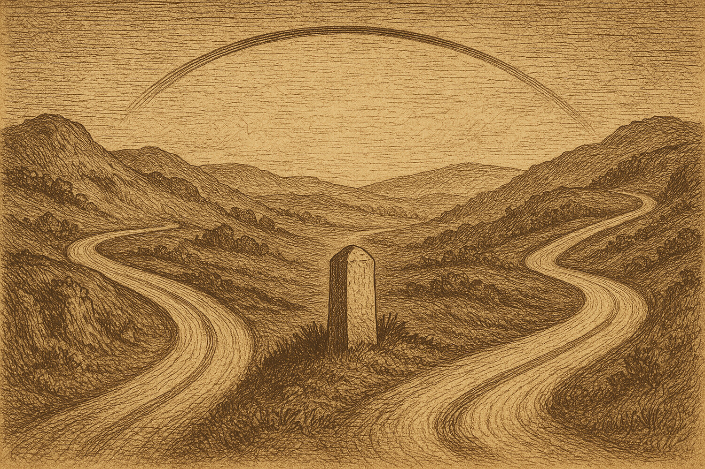

Duellum Veritatis · nightly duel
A nocturnal duel · science explainer
Two Roads to One Number
The cortex leaves a strange signature: the eigenspectrum of its representations decays almost exactly as 1/n. It is tempting to read that number as the fingerprint of one regime — soft chaos, a single knob you can turn. But what if two utterly different roads lead to the very same number, and the elegant curve on which we read off a "law" was only one slice of a far wider surface?

The cortex has a number that has become something of a talisman in recent years. Record many neurons at once and look at the eigenspectrum of their representations — how variance is spread across the principal axes — and it falls off as a power law: the n-th axis carries roughly 1/nᵃ of the variance, and in visual cortex the exponent α comes out close to one. This is not an accident: α≈1 is exactly the edge where a code is both rich in detail and smooth, differentiable. Where the brain gets that particular value is an open question.
The toolkit in one breath. α is the power-law decay exponent of the eigenspectrum: the smaller α, the "flatter" the spectrum and the more axes truly carry signal (higher dimensionality). λ_max (the maximal Lyapunov exponent) measures how chaotic the network's dynamics are: λ>0 is chaos (nearby trajectories diverge), λ=0 is the edge of chaos, λ<0 decays to rest. Supercriticality is λ>0, the regime past the edge. PR (participation ratio) flags a non-degenerate spectrum: PR>8 means many axes really carry signal and the slope α can be read as a law. The seed paper showed that chaos in recurrent networks structurally generates power-law spectra resembling the cortical one.This duel is not a retelling of the paper. The sides were handed a candidate hypothesis the paper merely suggested, and asked to test it with numbers. The hypothesis is risky: it turns the soft "chaos somehow yields a power-law spectrum" into the hard "there is a specific computable knob α(λ_max), and cortical α≈1 corresponds to a definite supercriticality."
The suspicion at the heart of the duel. What if α is set not only by the dynamical regime but also by the geometry of the inputs — the structure of the stimulus manifold (the Stringer et al. line)? Then λ_max and α are not "knob and reading" but two consequences of a shared kitchen: they can be moved apart. A curve α(λ_max) found in one slice would be the projection of a two-dimensional surface onto a single axis — and it would collapse the moment you touch the second axis.The frozen claim
The thesis Athos was assigned to defend, fixed before the duel and not edited afterwards:
"The power-law decay exponent α of the eigenspectrum of neural representations is a monotone, computable function of the network's maximal Lyapunov exponent λ_max; the cortical value α≈1 corresponds to a specific λ_max>0 (soft supercriticality), NOT to the edge of chaos (λ_max=0) and not to task optimisation."
The falsifier both sides accepted is threefold. The thesis is wrong if: (1) at fixed gain, input statistics move α and λ_max independently so that α does not lie on the calibrated curve; OR (2) cortical α≈1 is reached at the edge of chaos (λ_max≈0) rather than at λ_max>0; OR (3) α≈1 is robustly reachable without supercriticality (λ_max<0) — i.e. the exponent is set by stimulus geometry, not the dynamical regime.


The duel: arithmetic, not rhetoric
Every move was a small simulated world with a measurable answer: a reservoir network (tanh, N=200), a run, λ_max measured from a tangent vector and α from the log-log slope of the eigenspectrum. Three things became clear along the way, and one was decisive — and the decisive blow was struck by the thesis's own defender.
The slice where the law looked real
Within a fixed input ensemble α does fall smoothly and monotonically as λ_max rises — Spearman ρ ≈ −0.99 across this gain grid (averaged over 6 seeds; the per-point λ spread across seeds is small, sd ≤ 0.02). But there is a caveat: at low gain the spectrum is degenerate (PR ≈ 3), and α cannot be read as a law there — a genuine power-law decay appears only where PR>8. And here is the key: at the edge of chaos (λ≈0) the spectrum is still too steep (α≈2.0), while cortical α≈1 is reached well past it — at λ≈+0.20 (gain g=2.5; PR≈28), clearly supercritical. In this slice the core of the thesis holds. An elegant curve. The temptation is to call it a law.
Retired by the defender himself: the input axis is a second, independent knob
Next Athos put the curve to the test of a second axis. At fixed gain (g=1.5) he varied the input statistics — and the picture fell apart. Input amplitude drives λ_max across a wide range (from +0.03 to −0.53; Spearman(σ,λ)=−1), yet α does not follow the calibrated curve: it stays in a narrow band ≈1.5–2.6, where the curve would have predicted quite different, steep values. So α is not a function of λ_max alone; the input forms a second, independent axis. Athos honestly conceded the strong version: there is no single knob α(λ_max) that works for any input. The result is directional — a matched-λ sweep would sharpen it.
What remained was a narrow core — "with a poor input, the only available road to α≈1 is supercritical." And Athos put it to the decisive test: can α≈1 be reached under subcritical dynamics (λ<0) by input geometry alone — a power-law stimulus covariance, the Stringer route?
The decisive test — a knockout in his own hands
The defender built subcritical networks (λ_max deeply negative) and drove them with a power-law-covariance input (120 channels). The result went straight through the thesis: α came out ≈1 at λ_max from −0.9 to −1.9 — with no chaos, no supercriticality, at a high and healthy dimensionality (PR ≈ 25–30, spectrum non-degenerate). This is a toy realisation compatible with the stimulus-geometry account (the Stringer line) — inside PRO's own model, and not on cortical data. Falsifier (3) fired — in the hands of the very side defending the thesis.
The verdict
Outcome (who argued better): CON — the refuting side (Aramis) prevailed on argumentation.
Substantive verdict (was the claim true): CON — the strong version of the hypothesis was refuted on the merits.
Here the two axes converge. Unlike cases where "argued better" and "claim is true" diverge, here they point the same way: CON both argued more strongly and was right on the substance. The strong formulation (a single causal knob α(λ_max) that displaces the stimulus-geometry account) did not survive.
The arbiter judged that CON held the original strong thesis in frame more precisely and pressed the falsifiers in a disciplined way, correctly turning PRO's own numbers against the thesis. PRO earned a point for intellectual honesty — it ran the decisive test itself and accepted the outcome — but over the course of the duel narrowed the thesis to a weaker version than the one declared. What survived: the dynamical road to a power-law spectrum is sufficient and, within a fixed ensemble, parameterisable. What collapsed: its necessity and exclusivity. α is multicausal.
Basis: real_compute (attached bundle) · Protocol: PASS (clean arbiter verdict) · Order-swap audit: PASS (substantive "con" stable when the side order was swapped) · Verbosity caveat: PRO wrote substantially more than CON (1852 vs 1147 words, imbalance 0.62) — but the wordier side lost, so "whoever talked more won" does not apply here.
What this supports
- The dynamical road is sufficient: a chaotic reservoir really does yield a power-law spectrum, and within a fixed input ensemble α(λ_max) is monotone and computable (ρ≈−0.99).
- A second, independent sufficient path exists: power-law input geometry yields α≈1 in a deeply subcritical network (λ from −0.9 to −1.9, PR>8) — a Stringer-type mechanism reproduced.
- The input axis is independent: at fixed g the input drives λ_max across −0.53..+0.03 while α stays in a 1.5–2.6 band off the calibrated curve — α lives on a two-dimensional surface, not a curve.
What this does not support
- It does not show that cortical α≈1 results from supercriticality: the real brain may live on either road or a mixture.
- It does not establish a single causal knob α(λ_max) — varying the input breaks the relation; the exponent is not uniquely derivable from λ_max.
- It does not transfer to the empirics: the models are random untrained reservoirs on synthetic inputs; trained, biologically realistic networks and real cortical data were not tested.
Where the losing side still has a point
The thesis's defender lost, but left a genuine result behind, not empty rhetoric. First, the dynamical road really is sufficient and, in a narrow regime, parameterisable — a computable monotone α(λ_max) with ρ≈−0.99 is not trivial: chaos does generate a power-law spectrum with a predictable exponent. Second, the methodological lesson PRO articulated itself is valuable and transferable: "found monotonicity in a slice, declared it a law" is a classic trap. A curve found at a fixed second variable can be the projection of a surface onto one axis; you must test a dependence by moving all the axes, not one. It was CON's pressure that forced the decisive test — and both sides converged on the honest picture.
Prior-work note
This release makes no originality claim. The seed paper established that chaos in recurrent networks structurally generates cortex-like power-law spectra; the Stringer et al. line showed the cortical exponent α≈1 and its link to stimulus-manifold geometry. The duel's contribution is a stress-test of one mechanistic candidate hypothesis (α as a computable function of λ_max), not a new empirical finding. Nor is it a dispute with the seed paper itself: it does not contest that paper's result (chaos yields power-law spectra) — it tests a separate strong superstructure built on top of it. Novelty status: not an originality claim.
Appendix · reproducibility
All numbers and figures come from the attached reproducible bundle (numpy/scipy; no network). Script, data, hashes, environment and rerun instructions are recorded in 2026-06-07_compute_manifest.json.
Model: recurrent reservoir (tanh), N=200, T=2000, burn-in 300; W ~ N(0,1)/√N with gain g; λ_max from the growth of a renormalised tangent vector through the Jacobian diag(1−x²)·gW (a finite-time estimate of the leading exponent under input drive, not the asymptotic autonomous one); α the negative log-log slope of the covariance eigenspectrum over ranks [3, N/2]; PR=(Σλ)²/Σλ² as a non-degeneracy indicator. Inputs: a fixed sinusoidal ensemble (probes A/B) and a 120-channel power-law-covariance input (probe C). 6 fixed seeds per cell.
Probe A (fixed input), mean over 6 seeds: g=0.7 → λ=−0.59 α=4.73 PR=3.0 · g=1.0 → λ=−0.29 α=3.98 PR=3.1 · g=1.5 → λ=−0.01 α=2.03 PR=4.3 · g=2.0 → λ=+0.10 α=1.10 PR=12.0 · g=2.5 → λ=+0.20 α=0.97 PR=27.9 · g=3.0 → λ=+0.28 α=0.90 PR=46.0. Spearman(λ,α)=−0.99. At g≤1.5 the spectrum is degenerate (PR<8) — α is not a law there.
Probe C (power-law input geometry, subcritical): g=0.3 → λ=−1.86 α=1.09 PR=25.3 · g=0.5 → λ=−1.35 α=1.05 PR=26.6 · g=0.8 → λ=−0.90 α=0.99 PR=29.8. α≈1 reached at λ<0, PR>8.
Input axis (g=1.5, input dim 5): rising input amplitude shifts λ from +0.03 to −0.53 (Spearman(σ,λ)=−1), while α stays in a ≈1.5–2.6 band and does not follow the calibrated curve — a second independent axis.
Environment: Python 3.12.3 · numpy 2.4.4 · scipy 1.17.1 · linux-x86_64.
script_sha256: sha256:de638c37ef5bf847cbb4dd08d3129c6fc606616433af35181b35c4db07597605
2026-06-07_cc_data.json sha256: sha256:425e7210952a5b3920b2ddc3adbb1d69a06f1ea22a6be73f5f9aa12896b01423
Rerun: python3 2026-06-07_repro.py → writes 2026-06-07_cc_data.json
Order-swap audit: 2026-06-07_no5_order_swap_audit.json — natural "con", swapped "con", status PASS.
Errata / quarantine: none.
References
Bauer, J., Keup, C., Kadmon, J., & Helias, M. (2026). Discrete signaling mediates chaotic regularization in recurrent neural networks (arXiv:2606.04426). arXiv. https://arxiv.org/abs/2606.04426
Seed paper — it only suggested the candidate hypothesis and was not itself the subject of the duel.
Stringer, C., Pachitariu, M., Steinmetz, N., Carandini, M., & Harris, K. D. (2019). High-dimensional geometry of population responses in visual cortex. Nature, 571(7765), 361–365. https://doi.org/10.1038/s41586-019-1346-5
Competing account — cortical α≈1 via stimulus-manifold geometry; exactly the account CON upheld with the decisive test.
Citation style: APA 7. References ordered alphabetically by first author.
Duellum Veritatis · a public adversarial AI stress-test of a frozen scientific claim · published by Occam Research · engine and arbiter identities withheld by design.